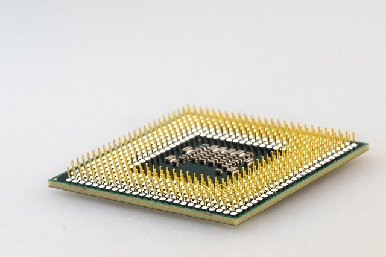

The CPU is at the heart of a computer, the brain in which all operations take place.
A CPU consists of many individual components which all serve a specific purpose. When a programme is lauched, instructions are loaded into RAM (Random Access Memory) because this is significantly faster than traditional hard drives, and even SSDs.
A CPU is there to execute the instructions which have been loaded; there are three basic operations which the CPU can perform:
• It can move data from one memory location to another
• It can perform simple mathematical operations (+-*/)
• It can evaluate conditions (><=)
A CPU consists of the following components:
• Control Unit (CU)
• Arithmetic Logic Unit (ALU)
• Clock
• Cache
• Registers
• Buses
The CU is the part of the CPU controls how data is transferred between RAM and the various components of the CPU. It also decodes the instructions and decides how to act on these instructions.
The ALU is the part of the CPU which carries out the arithmetic and logic (NOT, AND, OR) operations. The ALU recieves instructions from the CPU and loads one or more operands (data) out of registers in the CPU. The operation is performed on the operands and the result is output to a storage register. The ALU carries out multiplication and division operations by performing a series of addition, subtraction and shift operations. There may be multiple ALUs in a CPU, or the ALU may be split into the AU and the LU, of which there may also be multiple.
The clock is the pulse in a CPU which keeps all of the components is sync. It has a constant 'tick' which switches between 1 and 0. A clock cycle begins when the clock switches from 0 to 1. Clock speed is measured in hertz; for example, a 4 GHz clock speed or rate equates to about 4 billion cycles per second. The faster the clock speed, the faster a CPU can carry out instructions, however, the higher the clock speed, the more energy is used and the more heat is produced! However fast the clock speed is, performance is always limited be the slowest component (the bottleneck).
A bus is a set of parallel wires connecting two or more components in a computer.
Address Bus - The address bus determines the location in memory that the processor will read data from or write data to. Each 'word' in memory has its own address, the address bus sends the memory address of the data which is to be written to or retrieved.
Data Bus - The data bus contains the contents read from the memory location or which are to be written into the memory location. The data bus is bi-directional.
Control Bus - The control bus communicates with the other components and devices. It carries commands from the CPU and returns status signals. It controls access to the address and data buses to avoid conflict. The control bus can send commands including: Bus Request (indicates device requesting use of data bus), Bus Grant (grants use of data bus), Memory Write (causes data on data bus to be written to the memory location), Memory Read (causes data from the addressed location to be placed on the data bus), Interrupt Request, Clock (syncronises operations).
When the CPU needs to access a memory location, the address is sent along the address bus, and the data returned along the data bus. The control signals are sent along the control bus.
CPU caches are small amounts of very high speed memory, which can be used to store instructions until they are needed, or frequently used instructions. The cache is useful because it significantly improves the performance of the CPU, as it spends less time sitting idle, waiting for the next data or instructions to arrive from the much slower RAM. CPUs generally have multiple 'levels' of cache. Level 1 is the fastest with the other levels slower. A CPU will search its caches for the next piece of data required; if successful, this is called a cache hit. Developers can significantly improve the performance of their code by ensuring it is properly optimised, so that the CPU is able to cache it more successfully.
The CPU contains many registers which temporarily store data or instructions until needed.
Program Counter (PC) - The PC points to the next instruction to be executed. Once executed, it points to the next instruction.
Accumulator (ACC) - This holds the data currently being processed by the CPU. Results of processes are also temporarily stored in the accumulator before being moved into memory.
Memory Address Register (MAR) - Stores the address of the memory location which is currently in use, this can be either instructions or data. The MAR allows the CPU to communicate directly with the address bus (via buffer)
Memory Data Register (MDR) - Stores data or instructions from RAM before used by CPU to be quickly accessed by when needed. It acts as a buffer between the CPU and memory.
Current Instruction Register (CIR) - Stores the current instruction to be executed.
This architecture was proposed by John von Neumann. It uses the stored program concept; instructions are fetched and executed one by one by a processor. In the von Neumann architecture, the same data bus is used to transfer data and instructions and the same address bus is used to transfer the address of both instructions and data. This means that only one thing can be done at a time, which causes the von Neumann bottlenck. Click here for an interactive diagram!
Used in Digital Signal Processing including audio and speed signal processing, sonar and radar signal processing. The Harvard architecture has distict sets of address and data buses for instructions and data, thus mitigating the von Neumann bottleneck.